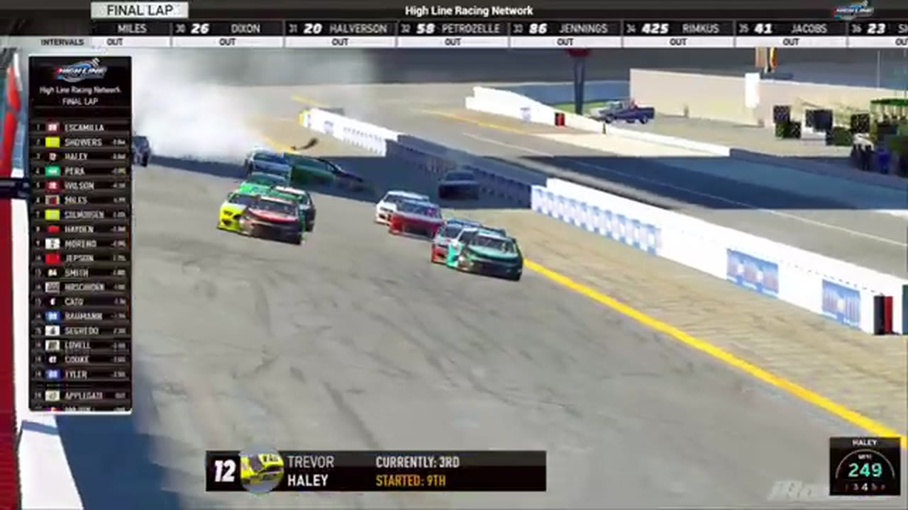

Race 4 at iRacing Superspeedway
James Smith and an uncertain second-stage scorer set the table before Juan Escamilla displaced teammate Trevor Haley in the final run.

- Date
- December 8, 2025
- Track
- iRacing Superspeedway
- Race tape
- 2h 10m
- Exact chapters
- 16
Juan Escamilla reaches the record
The iRacing Superspeedway broadcast's closing readout records Juan Escamilla first, Trevor Haley second, and Randy Showers third.
TAPE-SUPPORTED. Only explicitly supported positions are published; a nearby running order is never promoted into a finish.16 ways back into the race
Every link opens the complete broadcast at the reviewed timestamp. Chapter summaries are navigation claims unless explicitly marked as result-supported.
-
RESTART · MIDDLEOPEN EXACT CUT
The iRacing Superspeedway field takes the opening green
S1 / R4 at 1:21:06: The official iRacing Superspeedway race broadcast reaches the opening green, with John Petruzzelli and Trevor Haley among the first drivers named. This cut begins before the launch and stays with the first live-race call.
-
INCIDENT · MIDDLEOPEN EXACT CUT
An unidentified spin sends iRacing Superspeedway under caution
S1 / R4 at 1:26:25: The caution sequence sends the broadcast back through replay angles. This is a source-bounded incident window; it preserves what the booth reviews without assigning unsupported fault.
-
STRATEGY · MIDDLEOPEN EXACT CUT
Damaged cars cycle through superspeedway pit road
HLRN returns live under caution as the damaged No. 57 reaches pit road, John Miles enters, and Trevor Haley exits with Juan Escamilla. The card documents the caution pit cycle without turning the No. 57's damage into a new incident.
-
INCIDENT · MIDDLEOPEN EXACT CUT
Scott Wise is caught in the iRacing Superspeedway caution replay
S1 / R4 at 1:32:47: The caution sequence centers the replay call on Scott Wise. This is a source-bounded incident window; it preserves what the booth reviews without assigning unsupported fault.
-
INCIDENT · CLOSINGOPEN EXACT CUT
A lane move clips Scott Wise and sweeps Aaron Trebig into the wreck
The primary replay follows an unidentified No. 57 moving across Scott Wise's nose and collecting Aaron Trebig. The card preserves the booth's observed sequence without assigning an identity or motive to the No. 57.
-
INCIDENT · CLOSINGOPEN EXACT CUT
HLRN cannot locate the cause of a late superspeedway caution
A caution interrupts the pack, but repeated replay searches do not reveal a visible incident. The booth considers an inadvertent caution and leaves the cause unresolved on tape.
-
FEATURE · CLOSINGOPEN EXACT CUT
Shawn Stamper's fan club owns the late caution break
With the field still under caution, HLRN checks Shawn Stamper's recovery drive and reads the growing fan response around him. This is broadcast-culture context, not a new incident or result claim.
-
RESTART · CLOSINGOPEN EXACT CUT
Trevor Haley leads the green-white-checkered formation
The booth resets the late running order behind Trevor Haley and Juan Escamilla while the pace car remains out. A Jerry Fassett connection signal interrupts the setup before the field reaches the restart.
-
INCIDENT · CLOSINGOPEN EXACT CUT
Connection trouble precedes the iRacing Superspeedway caution replay
S1 / R4 at 1:43:57: The caution sequence centers the replay call on Jerry Fassett and Trevor Haley. This is a source-bounded incident window; it preserves what the booth reviews without assigning unsupported fault.
-
FINISH · CLOSINGOPEN EXACT CUT
Juan Escamilla's high lane overtakes Trevor Haley at the stripe
Trevor Haley takes the white flag in front, but Juan Escamilla advances on the high side in the final run. The booth then receives the Escamilla winner indication and begins its photo-finish review.
-
INTERVIEW · CLOSINGOPEN EXACT CUT
Juan Escamilla tells the winner's side
S1 / R4 at 1:51:34: Juan Escamilla and Trevor Haley join the HLRN booth for a first-person race account. The interview is preserved as context and does not create a placement claim outside the accepted result ledger.
-
POSTRACE · CLOSINGOPEN EXACT CUT
The iRacing Superspeedway desk replays the lead battle
S1 / R4 at 1:52:23: The reviewed live-race close has passed before this iRacing Superspeedway battle booth review begins with Trevor Haley named in the discussion. It remains post-race context, not a new incident, stage, strategy call, finish, or result receipt.
-
INTERVIEW · CLOSINGOPEN EXACT CUT
Trevor Haley explains the race from the booth
S1 / R4 at 1:54:36: Trevor Haley joins the HLRN booth for a first-person race account. The interview is preserved as context and does not create a placement claim outside the accepted result ledger.
-
POSTRACE · CLOSINGOPEN EXACT CUT
The iRacing Superspeedway desk replays the finish
S1 / R4 at 1:57:27: The reviewed live-race close has passed before this iRacing Superspeedway finish booth review begins. It remains post-race context, not a new incident, stage, strategy call, finish, or result receipt.
-
POSTRACE · CLOSINGOPEN EXACT CUT
Trevor Haley anchors the iRacing Superspeedway finish replay
S1 / R4 at 2:04:22: The reviewed live-race close has passed before this iRacing Superspeedway finish booth review begins with Trevor Haley named in the discussion. It remains post-race context, not a new incident, stage, strategy call, finish, or result receipt.
-
RESULT · CLOSINGOPEN EXACT CUT
Juan Escamilla is confirmed atop the iRacing Superspeedway results
The iRacing Superspeedway broadcast's closing readout records Juan Escamilla first, Trevor Haley second, and Randy Showers third.
All 20 official winners are backed by position-specific calls in a primary broadcast or an HLRN-authored companion episode. Complete finishing orders, points, and starts remain open until owner records are supplied.